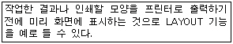
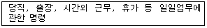
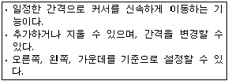
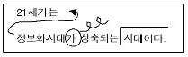
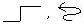
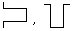
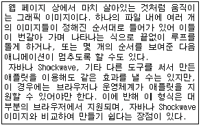

워드프로세서-2급(폐지) (2005-11-20 기출문제)
1과목: 워드프로세서 용어 및 기능
1. 다음 중 ‘♣’나 ‘⊙’와 같은 특수 문자에 대한 설명으로 옳지 않은 것은?
- 자판에는 나타나 있지 않으므로 특수 문자표(혹은 코드표)를 이용하여 입력한다.
- 특수문자는 모두 1바이트로 구성되어 있다.
- 한글 윈도 운영체제에서 한글 자음을 입력한 후 [한자] 키를 누르면 특수문자가 나타나므로 이를 이용하여 입력할 수 있다.
- 문서에 포함되어 있는 특수문자는 찾기 기능을 이용하여 찾을 수 있다.
(정답률: 83%)

2. 다음 중에서 “Cut(오려두기) → Paste(붙이기)” 기능과 가장 관련이 있는 기억장치는?
- CD-ROM
- 하드디스크(Hard Disk)
- 버퍼(Buffer)
- 플로피디스크(Floppy Disk)
(정답률: 90%)
3. 다음 중 저장(Save) 기능에 대한 설명으로 옳은 것은?
- 주기억장치의 내용을 보조기억장치에 저장하는 기능
- 연산장치의 결과를 주기억장치에 저장하는 기능
- 보조기억장치의 내용을 주기억장치에 저장하는 기능
- 주기억장치의 내용을 연산장치에 보내는 기능
(정답률: 81%)
4. 다음 중에서 토글 키가 아닌 것은?
- [Caps Lock]
- [Insert]
- [Scroll Lock]
- [Delete]
(정답률: 90%)
5. 다음 중 문서의 저장기능과 가장 거리가 먼 것은?
- 문서 스타일 지정하기
- 파일 이름 지정하기
- 문서 암호 넣기
- 저장 폴더 변경
(정답률: 75%)
6. 다음 중 문서의 인쇄에 대하여 설명한 것으로 옳지 않은 것은?
- 문서의 특정 쪽을 지정하여 인쇄할 수 있다.
- 여러 개의 프린터가 설치된 경우 특정 프린터를 선택하여 인쇄할 수 있다.
- 인쇄 대화상자에서 문단의 정렬 방식을 변경할 수 있다.
- 인쇄 부수를 지정하여 한 번의 명령으로 동일한 문서를 여러 번 인쇄할 수 있다.
(정답률: 77%)
7. 행정기관 내에서 자료관리에 관한 사무를 주관하는 부서 또는 담당과는?
- 문서과
- 처리과
- 관리과
- 자료과
(정답률: 67%)
8. 다음 중 글자와 배경이 반대로 나타나는 문자는?
- 강조 문자
- 테두리 문자
- 역상 문자
- 그림자 문자
(정답률: 91%)
9. 다음 보기의 설명과 관계 깊은 용어는 무엇인가?

- 하드 카피(Hard Copy)
- 소프트 카피(Soft Copy)
- 마진(Margin)
- 폼 피드(Form Feed)
(정답률: 70%)
10. 다음 중 디지타이저(Digitizer)에 대한 설명으로 옳지 않은 것은?
- 주로 라이트 펜을 이용한다.
- 좌표 정보를 이용하여 커서를 이동한다.
- 펜으로 누르는 것만 명령을 수행하게 된다.
- 주로 그림, 도표, 설계도면 등을 입력하는 데 많이 사용된다.
(정답률: 58%)
11. 다음 중 주로 영문을 입력할 때 사용하는 기능으로 행의 끝에서 단어가 잘릴 경우 해당 단어 자체를 다음 행으로 이동시키는 것을 무엇이라고 하는가?
- 메일 머지(Mail Merge)
- 영문 균등(Justification)
- 워드 랩(Word Wrap)
- 래그드(Ragged)
(정답률: 73%)
12. 다음 설명이 의미하는 지시문서의 종류로 적합한 것은?

- 훈령
- 지시
- 예규
- 일일명령
(정답률: 88%)
13. 다음 중 자기권한에 속하는 업무의 일부를 일정한 자격자에게 위임하여 그 위임을 받은 자가 일정 범위의 위임사항에 대하여 최고책임자를 대신하여 결재하는 것은?
- 정규결재
- 전결
- 대결
- 후결
(정답률: 70%)
14. 다음 중 맞춤법 검사(Spell Check) 기능에 대한 설명으로 옳지 않은 것은?
- 잘못 입력된 단어뿐만 아니라 문법적인 오류까지도 지적해 주는 경우도 있다.
- 자주 틀리는 단어는 자동적으로 바꾸도록 지정할 수 있다.
- 사전에 없는 단어는 사용자가 추가하여 더 이상 잘못된 단어로 인식하지 않도록 할 수도 있다.
- 잘못된 수식이 존재하는 경우에도 이를 찾아주어 고칠 수 있도록 한다.
(정답률: 48%)
15. 다음은 어떤 기능에 대한 설명인가?

- 단(다단) 기능
- 래그드(Ragged)
- 탭 기능
- 치환 기능
(정답률: 84%)
16. 다음 중 검색(Search)에 대한 설명으로 옳지 않은 것은?
- 특정 문서를 빠르게 찾는 기능이다.
- 서체, 크기, 속성을 지정하여 검색할 수 없다.
- 문서 내용에 변화를 가져오지 않는다.
- 영문 대소문자를 구분하여 검색할 수 있다.
(정답률: 61%)
17. 다음 중 치환(Replace)에 대한 설명으로 옳지 않은 것은?
- 영역을 지정하여 해당 부분만 치환할 수 있다.
- 한글, 영문이외에 특수문자도 치환할 수 있다.
- 치환 기능을 이용하여 문서의 일부분을 일정한 기준으로 정렬할 수 있다.
- 특정문자의 글자크기, 글자체 등을 변경할 수 있다.
(정답률: 64%)
18. 다음 중 화면 표시 장치에 대한 설명으로 옳지 않은 것은?
- 표시 장치로는 음극선관(CRT), 액정 디스플레이(LCD), 플라즈마 디스플레이(PDP) 등이 있다.
- CRT는 문자표시 속도가 빠르며, 가격이 저렴하나 LCD에 비해 눈의 피로가 심하다.
- LCD는 CRT에 비해 소비전력이 적으며 가볍고 휴대하기가 편리하나, 화면 표시 속도가 느리다.
- PDP는 다른 표시 장치에 비해 해상도가 가장 좋아 그래픽 영상 작업에 알맞으며, 두께가 얇고 가벼워 주로 휴대용 컴퓨터에 사용된다.
(정답률: 70%)
19. 다음 보기와 같이 교정부호를 사용하였을 경우의 결과로 옳은 것은?

- 21세기는 정보화시대 성숙되는
시대이다. - 21세기는
정보화시대가 성숙되는 시대이다. - 21세기는 정보화시대 시대이다. 성숙되는
- 21세기는 정보화시대가 성숙되는 시대이다.
(정답률: 85%)
20. 다음 중 서로 상반되는 의미를 나타내는 교정부호끼리 올바르게 짝지어진 것은?


(정답률: 91%)
2과목: PC 운영 체제
21. 한글 windows98에 설치된 프린터의 등록정보 창에서 설정할 수 있는 옵션이 아닌 것은?
- 기본 프린터 설정
- 인쇄작업 시간 초과 설정
- 용지 설정
- 스풀 기능의 사용 및 해제
(정답률: 44%)
22. 한글 windows98에서 임의의 폴더 내에 있는 특정 파일을 〔 Shift〕 키와 〔 Ctrl〕키를 동시에 누른 채 바탕화면으로 드래그 앤 드롭하면 어떤 일이 생기는가?
- 해당 파일이 삭제된다.
- 해당 파일의 이름 바꾸기를 할 수 있다.
- 해당 파일의 등록정보 상자가 나타난다.
- 해당 파일의 바로 가기 아이콘을 만들 수 있는 바로 가기 메뉴가 나타난다.
(정답률: 76%)
23. 한글 windows98이 시작될 때 나는 소리를 변경하려고 할 때, 가장 관련이 깊은 〔 제어판〕의 항목은?
- 멀티미디어
- 프로그램 추가/제거
- 사운드
- 암호
(정답률: 80%)
24. 한글 windows98의 〔 제어판〕에 있는 〔 마우스〕의 등록정보 창에서 설정할 수 없는 것은?
- 왼손잡이를 위한 마우스 단추 설정을 할 수 있다.
- 마우스 포인터의 모양을 변경할 수 있다.
- 마우스 포인터의 동작 속도를 변경할 수 있다.
- 마우스를 연결하는 포트를 바꿀 수 있다.
(정답률: 65%)
25. 한글 windows98에서 인터넷을 사용하기 위한 IP 주소의 형식으로 올바른 것은?
- 62:43:56:72:84:16
- 165.241.91.2
- 7569AF3G
- 756.9AF.3GB.100
(정답률: 81%)
26. 한글 windows98에서 창 (Window)의 사용법에 대한 설명으로 옳지 않은 것은?
- 창의 제목 표시줄을 드래그하면 창의 위치를 이동할 수 있다.
- 창의 제목 표시줄을 더블 클릭하면 창을 최대화하거나 원래 크기로 변경할 수 있다.
- 창의 제목 표시줄을 오른쪽 마우스로 클릭하면 창 관리를 위한 바로 가기 메뉴를 이용할 수 있다.
- 창의 제목 표시줄의 제목 부분을 마우스로 더블 클릭하면 창의 제목을 바꿀 수 있다.
(정답률: 68%)
27. 한글 windows98에서 인터넷을 사용하기 위한 통신규약은?
- LAN
- TCP/IP
- 모뎀
- WAN
(정답률: 82%)
28. 한글 windows98에서 C드라이브에 대한 〔 등록정보〕 중 〔 도구〕를 선택하여 수행할 수 없는 것은?
- 오류 검사
- 디스크 공간 늘림
- 백업
- 디스크 조각 모음
(정답률: 56%)
29. 다음 중 한글 windows98에서 〔 제어판〕에 있는 〔 프로그램 추가/제거〕 프로그램을 이용하여 할 수 없는 기능은?
- 응용 프로그램의 설치 및 제거
- Windows 구성요소 추가/제거
- 자동 디스크 만들기
- 시스템 사용자의 추가
(정답률: 44%)
30. 한글 windows98의 시작 메뉴에 있는 파일 또는 폴더의 〔찾기〕 기능에 대한 설명으로 옳지 않은 것은?
- 찾고자 하는 파일 이름을 찾기 조건으로 지정할 수 있다.
- 파일의 만든 날짜에 대한 기간을 찾기 조건으로 지정할 수 있다.
- 찾고자 하는 파일의 크기를 찾기 조건으로 지정할 수 있다.
- 찾고자 하는 파일의 속성을 찾기 조건으로 지정할 수 있다.
(정답률: 55%)
31. 한글 windows98에서 〔 보조프로그램〕의 〔 그림판〕에 관한 설명으로 옳지 않은 것은?
- BMP, JPG 형식의 그림 파일을 열 수 있다.
- 작성한 그림은 윈도의 바탕화면으로 만들 수 있다.
- 스캔한 사진을 보거나 편집할 수 있다.
- 작성한 그림을 OLE 기능을 사용하여 메모장에 붙여 넣을 수 있다.
(정답률: 76%)
32. 한글 Windows98의 〔시스템 도구〕에서 지원하는 〔디스크 검사〕의 결과로 표시되는 내용이 아닌 것은?
- 운영체제의 버전
- 전체 디스크 크기
- 사용할 수 있는 공간
- 불량 섹터의 용량
(정답률: 55%)
33. 한글 Windows98의 멀티 부팅과 관련된 바로 가기키에 관하여 올바르게 연결된 것은?
- [F4] - Normal
- [F5] - Safe mode
- [F7] - Window only
- [F8] - command prompt only
(정답률: 48%)
34. 한글 windows98의 〔 디스크 검사〕 프로그램으로 오류를 수정할 수 있는 드라이브가 아닌 것은?
- 플로피 디스크
- CD-ROM 디스크
- 압축된 드라이브
- RAM 드라이브
(정답률: 54%)
35. 다음 중에서 Windows98 운영 체제에 대한 설명으로 옳지 않는 것은?
- 네트워크 기능을 포함하고 있는 운영 체제이다.
- GUI 환경으로 직접 부팅 할 수 있다.
- 32비트의 멀티태스킹(Multi-tasking)의 운영 체제이다.
- VFAT32를 이용하여 최대 32자의 긴 파일 이름을 지원한다.
(정답률: 63%)
36. 다음 중 한글 windows98에서 사용하는 바로 가기키에 대한 설명으로 옳은 것은?
- [Ctrl] + [PrtScr] : 클립보드에 현재 사용 중인 활성 창만 복사한다.
- [Alt] + [F4] : 현재 사용하는 프로그램 창이나 열려 있는 폴더 창을 종료한다.
- [Esc] : 대화상자 상단의 탭을 번갈아 선택한다.
- [Shift] + [F3] : 선택한 개체의 바로 가기 메뉴가 나타난다.
(정답률: 69%)
37. 다음 중 한글 windows98에서 삭제된 파일이 〔 휴지통〕에 보관되는 경우는?
- 한글 MS-DOS 창에서 삭제한 파일
- 플로피 디스크 드라이브에서 삭제한 파일
- 하드디스크 드라이브에서 [Delete] 키를 눌러 삭제한 파일
- 네트워크 드라이브에 있는 파일을 삭제한 경우
(정답률: 70%)
38. 한글 windows98에서 〔 보조프로그램〕에 있는 〔 메모장〕에 대한 설명으로 옳지 않은 것은?
- 크기가 64Kbyte를 넘지 않는 간단한 텍스트 형식의 문서를 작성한다.
- 문서의 저장 형식은 확장자가 ‘.TXT’인 아스키 파일이다.
- 편집하는 문서의 일부 문자열에 대한 글꼴을 바꿀 수 있다.
- 대/소문자 및 전자/반자 구분으로 문자열을 찾을 수 있다.
(정답률: 58%)
39. 한글 windows98에서 새로운 작업 폴더를 만들려고 한다. 다음 중 어떤 프로그램을 사용하여야 하는가?
- Windows 탐색기
- 프로그램 추가/제거
- 새 하드웨어 추가
- 디스플레이
(정답률: 41%)
40. 다음 중 한글 windows98의 〔탐색기〕에서 할 수 없는 기능은?
- 파일을 삭제할 수 있다.
- 바로가기 아이콘을 만들 수 있다.
- 프로그램을 실행시킬 수 있다.
- 시스템을 재시동 할 수 있다.
(정답률: 70%)
3과목: PC 기본 상식
41. 다음 중 컴퓨터 바이러스에 대한 설명으로 옳지 않은 것은?
- 바이러스는 디스크의 부트영역이나 프로그램의 영역에 숨어있다.
- 사용 가능한 기억 용량을 감소시키는 바이러스도 있다.
- 바이러스 PC 통신의 파일 전송을 통해 감염될 수 있다.
- 모든 바이러스는 컴퓨터를 부팅 하는 순간에만 활동한다.
(정답률: 79%)
42. 다음은 하드디스크에 대한 설명이다. 옳지 않은 것은?
- IDE 방식, EIDE 방식, SCSI 방식 등이 있다.
- 부팅 드라이브는 슬레이브로 설정하도록 한다.
- 도스의 FORMAT 명령어를 사용하면 하드디스크를 초기화 할 수 있다.
- 하나의 디스크를 논리적으로 나누기 위해 FDISK를 사용한다.
(정답률: 44%)
43. 다음 중 차세대 개인용 정보 단말기로 펜 입력기능, 개인 스케줄 관리, 무선 통신기능, 전자책 기능 등을 주로 수행하며 손으로 쥘만한 크기의 휴대용 정보통신 기기는?
- COM
- 노트북 컴퓨터
- 미니 컴퓨터
- PDA
(정답률: 74%)
44. 다음 중 CPU의 구성 장치가 아닌 것은?
- 레지스터(register)
- 제어장치(control unit)
- 연산장치(ALU)
- 드라이버(driver)
(정답률: 75%)
45. 다음 중에서 PC 통신을 하려고 할 때 반드시 필요로 하지 않는 도구는?
- 모뎀 또는 LAN 카드
- CD-ROM
- 통신용 소프트웨어
- PC
(정답률: 79%)
46. 다음 중 멀티미디어 PC에 대한 설명으로 가장 적절하지 않은 것은?
- 멀티미디어 데이터를 재생, 처리할 수 있는 PC를 의미한다.
- 고성능 CPU, 고해상도 그래픽 카드, 사운드 카드, 스피커, CD-ROM 드라이브 등이 필요하다.
- 사운드 카드는 16비트 사운드 카드여야 한다.
- 멀티미디어 저작 시스템은 멀티미디어 콘텐츠를 통합하기 위한 시스템을 말한다.
(정답률: 73%)
47. 다음 중 네트워크 OSI(Open System Interconnection) 모델을 구성하는 계층이 아닌 것은?
- 프로그램 계층(Program Laver)
- 네트워크 계층(Network Laver)
- 물리 계층(Physical Layer)
- 데이터 링크 계층(Data Link Layer)
(정답률: 66%)
48. 중앙처리장치로부터 주변장치의 제어권을 위임받아 입출력을 처리하는 장치를 무엇이라고 하는가?
- 채널(Channel)
- 모뎀(Modem)
- 제어버스(Control Bus)
- 콘솔(Console)
(정답률: 67%)
49. 다음 중 시스템 규모에 따른 컴퓨터 시스템의 분류가 아닌 것은?
- 슈퍼컴퓨터(Super Computer)
- 메인 프레임 컴퓨터(Main Frame Computer)
- 하이브리드 컴퓨터(Hybrid Computer)
- 미니 컴퓨터(Mini Computer)
(정답률: 65%)
50. 다음 중 멀티미디어 서비스를 활용하고 있다고 볼 수 없는 것은?
- VOD 서비스를 이용하여 영화를 본다.
- 통신망을 통해 원격 화상 회의를 한다.
- 시스템 향상을 위해 디스크 조각 모음을 실시한다.
- 시뮬레이션 기술을 이용한 3차원 게임을 한다.
(정답률: 68%)
51. 다음 중 컴퓨터 범죄를 예방하기 위한 방법으로 옳지 않은 것은?
- 내부 네트워크에 방화벽을 설치하고 중요한 정보는 암호화한다.
- 방화벽이 설치된 경우 바이러스를 예방하기 위한 백신 프로그램은 설치하지 않아도 된다.
- 다른 사람들이 쉽게 유추할 수 없는 패스워드를 사용하고 주기적으로 변경한다.
- 개인정보를 요청하는 사이트 중 개인신상정보에 대하여 과다한 요구를 하는 사이트는 가급적 가입을 자제한다.
(정답률: 80%)
52. 여러 입출력 장치와 컴퓨터 본체의 연결 방법 중 허브 구조로 연결이 가능하며 최대 127대까지의 외부장치를 연결할 수 있는 방식은 어느 것인가?
- AGP(Accelerated Graphics Port)
- SATA(Serial ATA)
- SCSI(Small Computer System Interface)
- USB(Universal Serial Bus)
(정답률: 87%)
53. 사용자가 어떤 일의 처리를 컴퓨터에 의뢰하고 나서 그 결과를 얻을 때까지 소요되는 시간을 무엇이라 하는가?
- 자료처리 시간(Data Processing Time)
- 유휴 시간(Idle Time)
- 반응 시간(Response Time)
- 턴 어라운드 타임(Turn Around Time)
(정답률: 81%)
54. 다음 중 은행, 회사, 국가 등의 컴퓨터 시스템에 불법으로 접근하여 정보를 빼내거나 파괴하는 행위를 하는 사람을 일컫는 말은?
- 크래커
- 전문 프로그래머
- 통신인
- 시스템 분석가
(정답률: 93%)
55. 다음 용어에 대한 설명 중 옳지 않은 것은?
- 통신 소프트웨어 : 통신에 필요한 모뎀 제어, 송·수신 자료 처리, 파일 전송, 단말기 에뮬레이션의 기능 등을 제공하는 소프트웨어이다.
- 모뎀(MODEM) : 컴퓨터와 디지털 신호를 아날로그 신호로 바꾸어주는 변조 기능과 전화선을 통해 들어오는 아날로그 신호를 다시 디지털 신호로 바꾸어주는 복조 기능을 제공한다.
- BPS : ‘Bytes Per Second’라는 용어로, 데이터 통신에서 2,400bps의 경우 초당2,400글자가 전송되는 것이다.
- 채팅 : 2인 이상의 PC 사용자가 PC 통신을 통해 대화를 하는 것이다.
(정답률: 68%)
56. 다음 중 하나의 컴퓨터에 두 개 이상의 CPU를 두어 프로그램을 동시에 처리하는 방식을 의미하는 용어는 어느 것인가?
- 다중 프로그래밍(Multi-programming)
- 시분할 처리(Time sharing)
- 다중처리(Multi-processing)
- 다중 사용자(Multi-user)
(정답률: 78%)
57. 다음 중 컴퓨터에서 실행하여야 할 프로그램이나 파일을 메모리에 옮겨주는 프로그램을 무엇이라고 하는가?
- 연결 편집기(Linkage Editor)
- 적재기(Loader)
- 연결기(Linker)
- 편집기(Editor)
(정답률: 64%)
58. 다음 보기의 내용은 무엇을 설명한 것인가?

- animated GIF
- Holography
- TIFF
- Quick Time
(정답률: 72%)
59. 개별 물건에 극소형 전자태그가 삽입되어 있어 언제 어디서나 자유롭게 네트워크를 통해서 컴퓨터에 접속할 수 있는 환경을 의미하는 용어는 어느 것인가?
- 광속 상거래(CALS)
- 제닉스(XENIX)
- 유비쿼터스(Ubiquitous)
- 인트라넷(Intranet)
(정답률: 83%)
60. 다음 중 DVD에 대한 설명으로 옳지 않은 것은?
- ‘Versatile Disk’라고도 한다.
- 화질과 음질이 뛰어나며 4.7GB 정도의 대용량 데이터 저장이 가능하다.
- 현재 사용중인 CD-ROM은 DVD를 통해 재생할 수 없다.
- 동영상 데이터를 약 135분 정도 기록 가능하다.
(정답률: 64%)